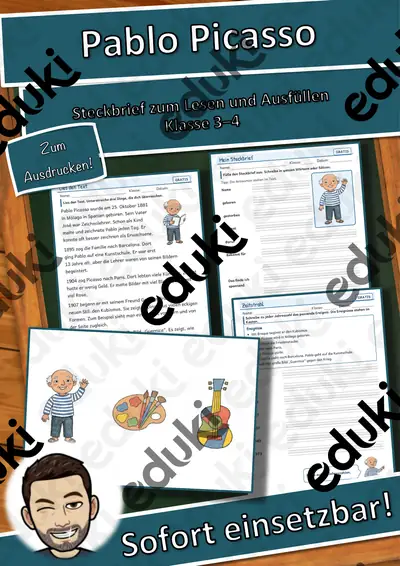
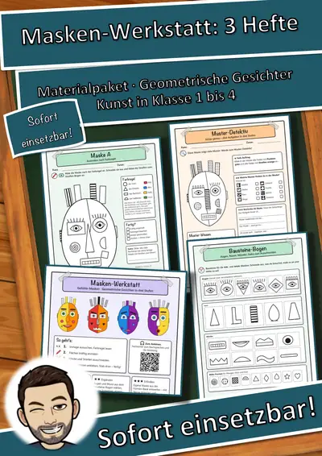
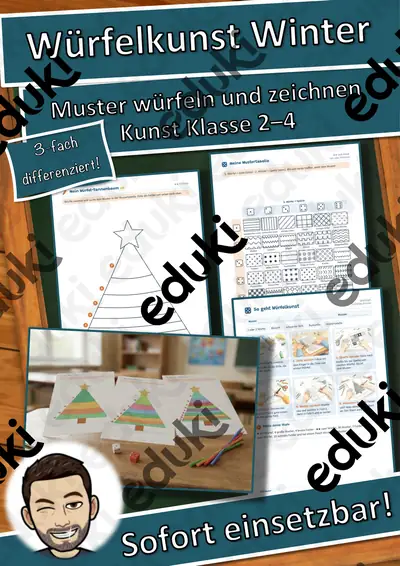
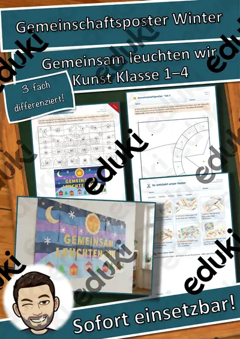

Pixelbilder Weihnachten (Kunst, Vertretung, Konzentrationsübung)
Mit diesen Pixelbildern zu Weihnachten stärken die Schüler ihre Konzentration. Durch das Übertragen der Raster auf ein Karopapier (Block), bilden die Schüler das Bild nach. Anschließend kann es ausgeschnitten und Laminiert werden. Mit einem kleinen Magneten lässt sich daraus auch noch ein schöner Kühlschrankmanget herstellen. #edukichristmas
FachKunst
KlasseKl. 3–6
SchulformGrundschule
MaterialartUnterrichtsreihen, Arbeitsblätter, Stationenlernen, Spiele
Ähnliche Materialien

Persönlichkeiten-Werkstatt: Picasso – Steckbrief zum Lesen und Ausfüllen, Klasse 3–4 (kostenlos)

Persönlichkeiten-Werkstatt: Picasso – Plus-Paket mit Texten in 3 Stufen, Quiz und Aktion, Klasse 3–4

Masken-Werkstatt Materialpaket: 3 Hefte – Geometrische Gesichter in 3 Stufen (Kunst, Klasse 1–4, Vorlagen + Bausteine)

Masken-Werkstatt Gefühle-Masken – Geometrische Gesichter in 3 Stufen (Kunst, Klasse 1–4, Vorlagen + Bausteine)

Masken-Werkstatt Muster-Masken – Geometrische Gesichter in 3 Stufen (Kunst, Klasse 1–4, Vorlagen + Bausteine)

Masken-Werkstatt Formen-Gesichter – Geometrische Gesichter in 3 Stufen (Kunst, Klasse 1–4, Vorlagen + Bausteine)

Würfelkunst Winter – Tannenbaum-Muster erwürfeln und zeichnen, 3-fach differenziert (Klasse 2–4)
